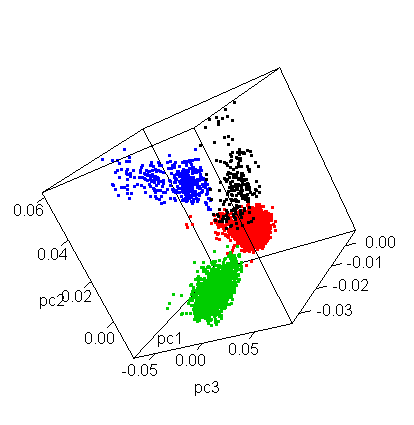
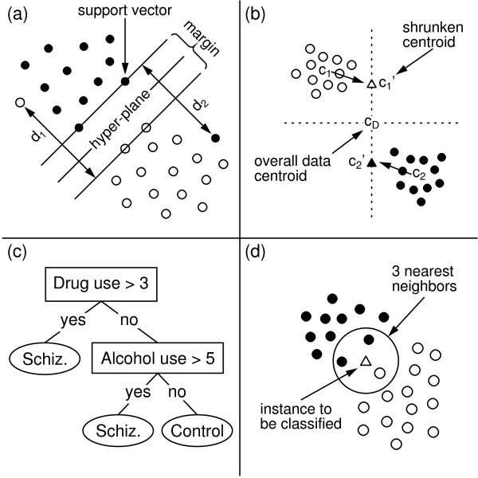

<!doctype html>
<html lang="en">
<head>
<meta charset="utf-8">
<!-- CUSTOMIZE THIS! -->
<title>Einführung in die Digital Humanities</title>
<meta name="author" content="Christof Schöch">
<!-- END -->
<meta name="description" content="Slides">
<meta name="apple-mobile-web-app-capable" content="yes">
<meta name="apple-mobile-web-app-status-bar-style" content="black-translucent">
<meta name="viewport" content="width=device-width, initial-scale=1.0, maximum-scale=1.0, user-scalable=no, minimal-ui">
<link rel="stylesheet" href="css/reveal.css">
<link rel="stylesheet" href="css/theme/simple.css" id="theme">
<!-- Code syntax highlighting -->
<link rel="stylesheet" href="lib/css/zenburn.css">
<!-- Printing and PDF exports -->
<script>
var link = document.createElement( 'link' );
link.rel = 'stylesheet';
link.type = 'text/css';
link.href = window.location.search.match( /print-pdf/gi ) ? 'css/print/pdf.css' : 'css/print/paper.css';
document.getElementsByTagName( 'head' )[0].appendChild( link );
</script>
<!--[if lt IE 9]>
<script src="lib/js/html5shiv.js"></script>
<![endif]-->
</head>

<body>
<div class="reveal">
<div class="slides">
<section data-markdown="" data-separator="^\n---\n" data-separator-vertical="^\n--\n" data-charset="utf-8" data-background-image="img/basics/uni-trier-mini.png" data-background-size="50px" data-background-position="top right">
<script type="text/template">

## Quantitative Textanalyse 2: Maschinelles Lernen
<hr/>
<br/>
<br/>Vorlesung *Einführung in die Digital Humanities*
<br/>MSc Digital Humanities | Wintersemester 2018/19
<br/>
<br/>Prof. Dr. Christof Schöch
<br/>
<br/>
<hr/>
<br/>


---
# Einstieg

--
## Semesterüberblick

<small>

* 23.10.: Digital Humanities im Überblick
* 30.10.: Digitalisierung: Text und Bild
* 06.11.: Grundbegriffe des Programmierens
* 13.11.: Datenmodellierung 1: Modellierung
* 20.11.: Datenmodellierung 2: Datenbanken
* 27.11.: Datenmodellierung 3: Text, Markup, XML
* 04.12.: Digitale Edition
* 11.12.: Geschichte der Digital Humanities
* 18.12.: Informationsvisualisierung
* 22.12.-2.1.: *Weihnachtspause*
* 08.01.: Computerlinguistik / Natural Language Processing
* 15.01.: Quantitative Analyse 1: Stilometrie
* 17.01.: **Quantitative Analyse 2: Superv. Machine Learning**
* 29.01.: Open Humanities
* 05.02.: Klausurtermin

</small>

--
## Sitzungsüberblick
<br/>
1. Machine Learning (ML)
2. Unüberwachtes ML: Verfahren
3. Überwachtes ML: Anwendungsbeispiel
4. Überwachtes ML: verschiedene "Classifier"


---
# 1. Machine Learning

--
## Zwei Typen von ML
|unüberwacht /<br/> unsupervised|überwacht /<br/>supervised|
|-----------|---------|
|Clustering|Klassifikation|
|Bilden von Gruppen|Zuordnung zu Klassen|
|keine Klassen|vorher bekannte Klassen|
|ein Datensatz|Training/Test/Anwendung|
|eher explorativ|hypothesengeleitet|
|Evaluation möglich|Evaluation leicht|
|Topic Modeling<br/>PCA, CA|Annotation<br/>OCR, NER|


---
# 2. Unüberwachtes ML: Verfahren


--
## Cluster-Analyse 
<br/>
</img>
<br/>(Stilometrie)

--
## Principal Components Analysis
<br/>
</img>
<br/>(Dimensionalitätsreduktion)

--
## Principal Components Analysis
</img>
<br/>(Dimensionalitätsreduktion; <br/>Quelle: http://www.gettinggeneticsdone.com/2011/10/new-dimension-to-principal-components_27.html


--
## Topic Modeling
<p><a href="http://signsat40.signsjournal.org/topic-model/#/model/grid"></img></a></p>
<p>Signs at 40</p>


---
# 3. Überwachtes ML (Klassifikation): Anwendungsbeispiel

--
## Projektseminar: Albencover
<p><a href="img/E12/1990_67ebbc43-0415-4a07-90b9-3f8f8be296eb_hip-hop-xxx.jpg"></img></a>&nbsp;&nbsp; &nbsp; &nbsp;
<a href="img/E12/1990_83219409-a39c-3c3c-9928-06f0eac04423_electronic-xxx.jpg"></img></a></p>
<p><a href="img/E12/1991_464721f0-91a9-42fc-b286-904106fce287_country-xxx.jpg"></img></a>&nbsp; &nbsp; &nbsp; &nbsp;
<a href="img/E12/2001_73bb810c-5d15-45ef-8de9-65e38b1238f6_electronic-xxx.jpg"></img></a></p>
<p>Klassifikation: Rock, Pop, Hip-Hop, Country, Electronic.<br/>Quelle: https://musicbrainz.org/</p>


--
## Prototypischer Ablauf
<br/>
1. Vorbereitung (Gegenstand, Fragestellung) <!-- .element: class="fragment" data-fragment-index="1" -->
2. Datensammlung erstellen  <!-- .element: class="fragment" data-fragment-index="2" --> 
3. Annotieren nach Klassen (Teil) <!-- .element: class="fragment" data-fragment-index="3" -->
4. Merkmale generieren <!-- .element: class="fragment" data-fragment-index="4" -->
5. Trainingsphase <!-- .element: class="fragment" data-fragment-index="5" -->
6. Evaluationsphase <!-- .element: class="fragment" data-fragment-index="6" -->
7. Anwendungsphase (Datensätze ohne Klasse) <!-- .element: class="fragment" data-fragment-index="7" -->
8. Interpretation der Ergebnisse <!-- .element: class="fragment" data-fragment-index="8" -->

--
## (1) Vorbereitung
<br/>
* Annahme: Musiker sind Künstler, denen auch die künstlerische Gestaltung ihrer Albumcovers wichtig ist <!-- .element: class="fragment" data-fragment-index="1" --> 
* Hypothese: Es gibt einen Zusammenhang zwischen Musikrichtung und Cover Art <!-- .element: class="fragment" data-fragment-index="2" -->
* Aufgabe: Albencover nach Musikrichtung klassifizieren <!-- .element: class="fragment" data-fragment-index="3" -->
* Nur auf Grundlage der visuellen Information <!-- .element: class="fragment" data-fragment-index="4" -->
* Bei fünf Genres: Zufallsbaseline 20%, Human Baseline: knapp 50% <!-- .element: class="fragment" data-fragment-index="5" -->

--
## (2) Datensammlung erstellen
<br/>
* Datenquelle: musicbrainz.org, Abruf über API <!-- .element: class="fragment" data-fragment-index="1" -->
* Struktur: Fünf Genres<br/>Rock, Pop, Electronic, Hip-Hop, Country <!-- .element: class="fragment" data-fragment-index="2" -->
* Umfang: 5 x 3.000 = 15.000 Albumcover <!-- .element: class="fragment" data-fragment-index="3" -->
* Daten: Bilddatei und Metadaten<br/> (Jahr, Titel, Band, Genre) <!-- .element: class="fragment" data-fragment-index="4" -->


--
## Beispiele für Cover
<p><a href="img/E12/1990_67ebbc43-0415-4a07-90b9-3f8f8be296eb_hip-hop-xxx.jpg"></img></a>&nbsp;&nbsp; &nbsp; &nbsp;
<a href="img/E12/1990_83219409-a39c-3c3c-9928-06f0eac04423_electronic-xxx.jpg"></img></a></p>
<p><a href="img/E12/1991_464721f0-91a9-42fc-b286-904106fce287_country-xxx.jpg"></img></a>&nbsp; &nbsp; &nbsp; &nbsp;
<a href="img/E12/2001_73bb810c-5d15-45ef-8de9-65e38b1238f6_electronic-xxx.jpg"></img></a></p>
Quelle: https://musicbrainz.org/

--
## (3) Annotieren nach Klassen
<br/>
* Jedes Album wird einer Musikrichtung zugeordnet
* Wir übernehmen die Zuordnung von Musicbrainz

--
## (4) Merkmale generieren 
<br/>
* Einfach <!-- .element: class="fragment" data-fragment-index="1" -->
    * Dominante Farben (Histogramm des HSV-Farbraums)
    * Sättigung und Helligkeit (HSV-Farbraum)
* Komplex <!-- .element: class="fragment" data-fragment-index="2" -->
    * Anzahl der Gesichter (OpenCV)
    * Welche Objekte sind sichtbar (ClarifAI API)
* Daten in einer Merkmals-Matrix zusammengefasst <!-- .element: class="fragment" data-fragment-index="3" -->
* Optional: Merkmalsskalierung (z-scores) <!-- .element: class="fragment" data-fragment-index="4" -->

--
## (5) Merkmals-Matrix
<br/>
<a href="img/E12/musicovers-matrix.png"></img></a>

--
## (5) Trainingsphase
<br/>
* Ein Teil der gelabelten Daten (bspw. 90%) zum "Trainieren"  <!-- .element: class="fragment" data-fragment-index="1" -->
* Algorithmus "lernt" einen Zusammenhang zwischen Merkmalen und Klassen <!-- .element: class="fragment" data-fragment-index="2" -->
* Verschiedene "Classifier" mit ihren Parametern <!-- .element: class="fragment" data-fragment-index="3" -->
* Bspw. "k-nearest neighbor" <!-- .element: class="fragment" data-fragment-index="4" -->

--
## (6) Evaluationsphase
<br/>
* Rest der Daten (10%) zur Evaluation <!-- .element: class="fragment" data-fragment-index="1" -->
* Vergleich der tatsächlichen Klasse mit der vom Algorithmus ernmittelten Klasse <!-- .element: class="fragment" data-fragment-index="2" -->
* F-Score <!-- .element: class="fragment" data-fragment-index="3" -->
    * Precision: welcher Anteil der als "Pop" erkannten Alben sind tatsächlich "Pop"
    * Recall: welcher Anteil der Pop-Alben wurden als solche erkannt?
    * F-Score: 2 x (precision x recall) / (precision + recall)
* Confusion Matrix <!-- .element: class="fragment" data-fragment-index="4" -->

--
## (6) Confusion Matrix
<p><a href="img/E12/XEV-006_tree-028.svg"></img></a></p>

--
## 7. Anwendungsphase
<br/>
* Entfällt in diesem Beispiel, weil alle Daten gelabelt sind
* Man könnte jetzt aber für weitere Alben Genrelabels vergeben

--
## 8. Interpretation der Ergebnisse
<br/>
* Wie stark ist der angenommene<br/> Zusammenhang Cover / Genre?  <!-- .element: class="fragment" data-fragment-index="1" -->
* Gibt es Unterschiede zwischen den Genres? <!-- .element: class="fragment" data-fragment-index="2" -->
* Sind die Klassen wirklich disjunkt? <!-- .element: class="fragment" data-fragment-index="3" -->
* Welche Merkmale sind entscheidend? <!-- .element: class="fragment" data-fragment-index="4" -->


---
# 3. Verschiedene "Classifier"

--
## Classifier: k-nn
<p><a href="img/E12/knn.jpg"></img></a></p>
<p><small>Quelle: Struyf, Jan; Dobrin, Seth; Page, David: "Combining gene expression, demographic and clinical data in modeling disease: A case study of bipolar disorder and schizophrenia", https://www.researchgate.net/figure/Illustration-of-the-a-support-vector-machines-b-nearest-shrunken-centroids-c_fig1_23459323, Lizenz <a href="https://creativecommons.org/licenses/by/2.0/">CC-BY</a></small></p>

--
## Classifier: SVM
<p><a href="img/E12/svm-2dims_alt.png"></img></a></p>
<p><small>Bildquelle: "A Linear Support Vector Machine", 2014: https://randomforests.wordpress.com/2014/01/29/a-linear-support-vector-machine/</small></p>

--
## Classifier: NSC
<p><a href="img/E12/nsc.jpeg"></img></a></p>
<p><small>Quelle: Struyf, Jan; Dobrin, Seth; Page, David: "Combining gene expression, demographic and clinical data in modeling disease: A case study of bipolar disorder and schizophrenia", https://www.researchgate.net/figure/Illustration-of-the-a-support-vector-machines-b-nearest-shrunken-centroids-c_fig1_23459323, Lizenz <a href="https://creativecommons.org/licenses/by/2.0/">CC-BY</a></small></p>

--
## Classifier: Decision Tree
<p><a href="img/E12/decision_tree.jpg"></img></a></p>
<p><small>Quelle: Struyf, Jan; Dobrin, Seth; Page, David: "Combining gene expression, demographic and clinical data in modeling disease: A case study of bipolar disorder and schizophrenia", https://www.researchgate.net/figure/Illustration-of-the-a-support-vector-machines-b-nearest-shrunken-centroids-c_fig1_23459323, Lizenz <a href="https://creativecommons.org/licenses/by/2.0/">CC-BY</a></small></p>


--
## Vier Classifier
<p><a href="img/E12/four-classifiers.jpeg"></img></a></p>
<p><small>Quelle: Struyf, Jan; Dobrin, Seth; Page, David: "Combining gene expression, demographic and clinical data in modeling disease: A case study of bipolar disorder and schizophrenia", https://www.researchgate.net/figure/Illustration-of-the-a-support-vector-machines-b-nearest-shrunken-centroids-c_fig1_23459323, Lizenz <a href="https://creativecommons.org/licenses/by/2.0/">CC-BY</a></small></p>


---
# Abschluss

--
## Fragen?

--
## Lektürehinweise
<small>
<br/>
* Christof Schöch, "Quantitative Analyse", in: *Digital Humanities: Eine Einführung*. Hrsg. von Fotis Jannidis, Hubertus Kohle, Malte Rehbein. Stuttgart: Metzler.
<br/>
<br/>
**Weitere Empfehlungen**
* Blei, D. M. (2012). "Probabilistic topic models". In: _Communications of the ACM_, 55(4): 77–84. http://www.cs.princeton.edu/~blei/papers/Blei2012.pdf
<br/>
<br/>
**Darüber hinaus**
* Alpaydin, E. (2010). _Introduction to Machine Learning_. 2nd ed. Cambridge, Mass: MIT Press.
* Ramsay, Stephen (2011). _Reading Machines : Toward an Algorithmic Criticism_. Urbana  Ill.: University of Illinois Press.

</small>

--
## Nächste Sitzung
<br/>
* 1.2.2018 (letzte Sitzung vor der Klausur)
* Mein Themenvorschlag: "Open Humanities"
* Vorbereitung: "Informationen zu Open Access"<br/>(mit den Unterpunkten im Menü):<br/> http://open-access.net/informationen-zu-open-access/


---
<br/>
<br/>
<br/>
<br/>
<br/>Christof Schöch, 2018
<br/>http://www.christof-schoech.de
<br/>
<hr/>
Lizenz: [Creative Commons Attribution 4.0](https://creativecommons.org/licenses/by/4.0/)
<br/>


</script>

<!-- DON'T TOUCH UNLESS YOU KNOW WHAT YOU'RE DOING :-) -->
</div>
<script src="lib/js/head.min.js"></script>
<script src="js/reveal.js"></script>
<script>
// Full list of configuration options available at:
// https://github.com/hakimel/reveal.js#configuration
Reveal.initialize({
    controls: true,
    progress: true,
    history: true,
    center: true,
    transition: 'slide', // none/fade/slide/convex/concave/zoom
    // Optional reveal.js plugins
    dependencies: [
        { src: 'lib/js/classList.js', condition: function() { return !document.body.classList; } },
        { src: 'plugin/markdown/marked.js', condition: function() { return !!document.querySelector( '[data-markdown]' ); } },
        { src: 'plugin/markdown/markdown.js', condition: function() { return !!document.querySelector( '[data-markdown]' ); } },
        { src: 'plugin/highlight/highlight.js', async: true, callback: function() { hljs.initHighlightingOnLoad(); } },
        { src: 'plugin/zoom-js/zoom.js', async: true },
        { src: 'plugin/notes/notes.js', async: true }
        ]
    });
Reveal.configure({ slideNumber: true });
</script>
</body>
</html>
